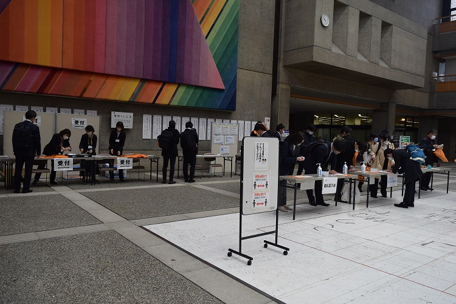
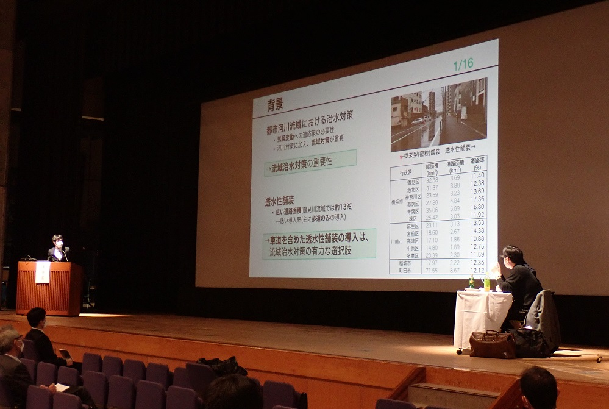
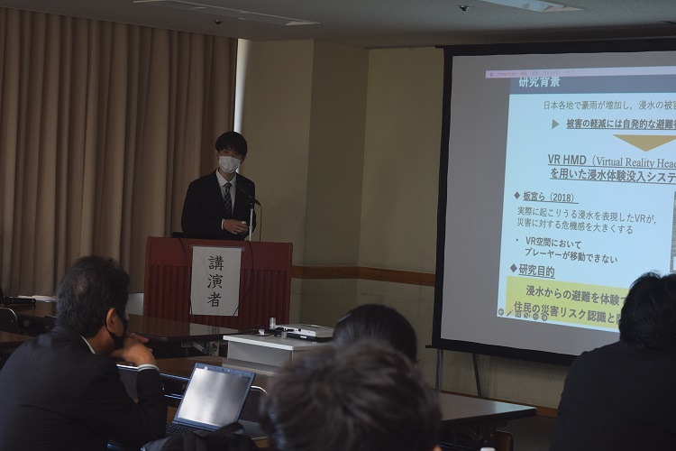
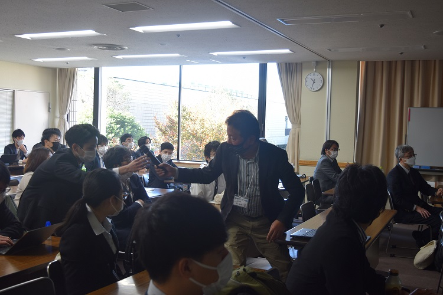
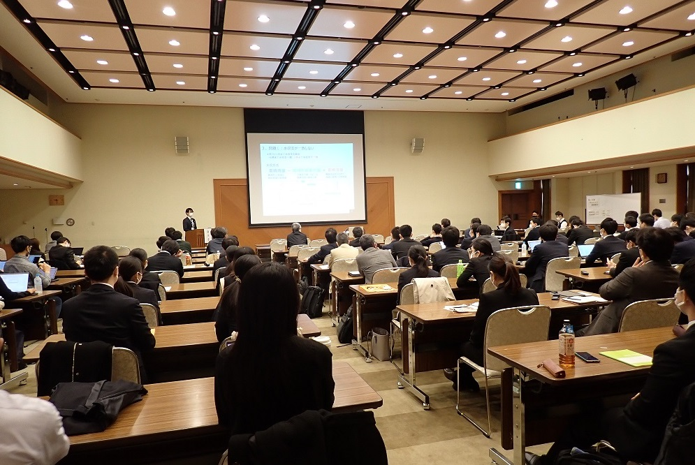
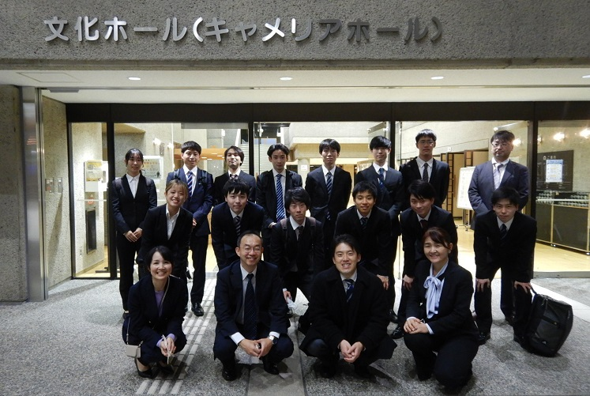

mizukan
イベント
第67回水工学講演会
2022年11月23日〜25日に松山市総合コミュニティセンターで
第67回水工学講演会が開催されました．


私たちは主に運営のお手伝いをしてきました．受付、会場の照明、タイムキーパー
など、緊張感もありましたが、各々の役割を無事にやり遂げることができました．

また、当研究室の花本悠輔君が「水害体験VRが住民の災害リスク
認識と防災意識に与える影響」というタイトルで発表を行いました．


今回の講演会は、様々な方の発表を聴講することができる貴重な機会でした.
内容はもちろん、発表の仕方やスライドの作り方など非常に勉強になりました．

講演会終了後の集合写真
良い刺激をいただいたので、自分の研究もさらに頑張ろうと思います!
文責 藤井